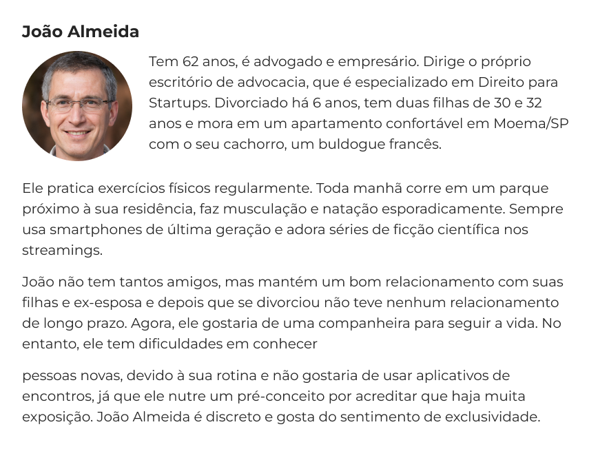
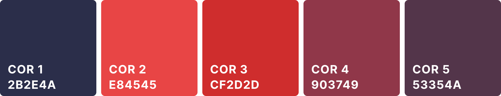
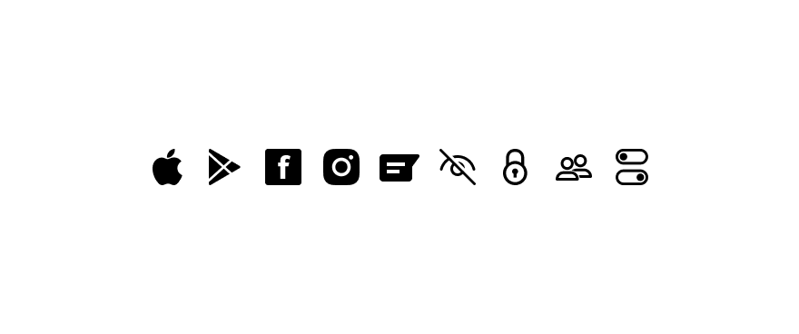
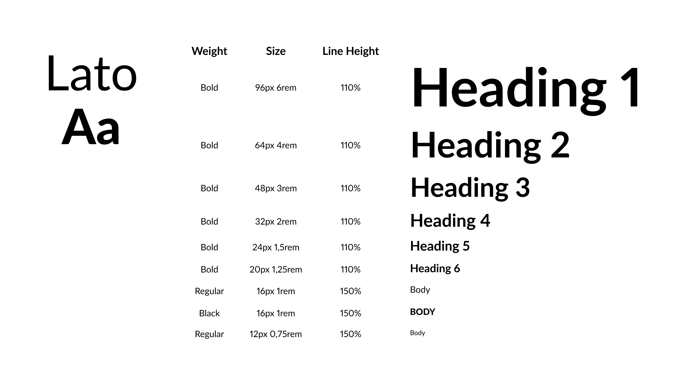
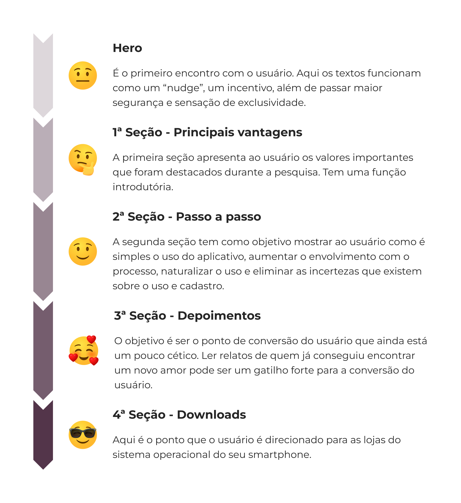
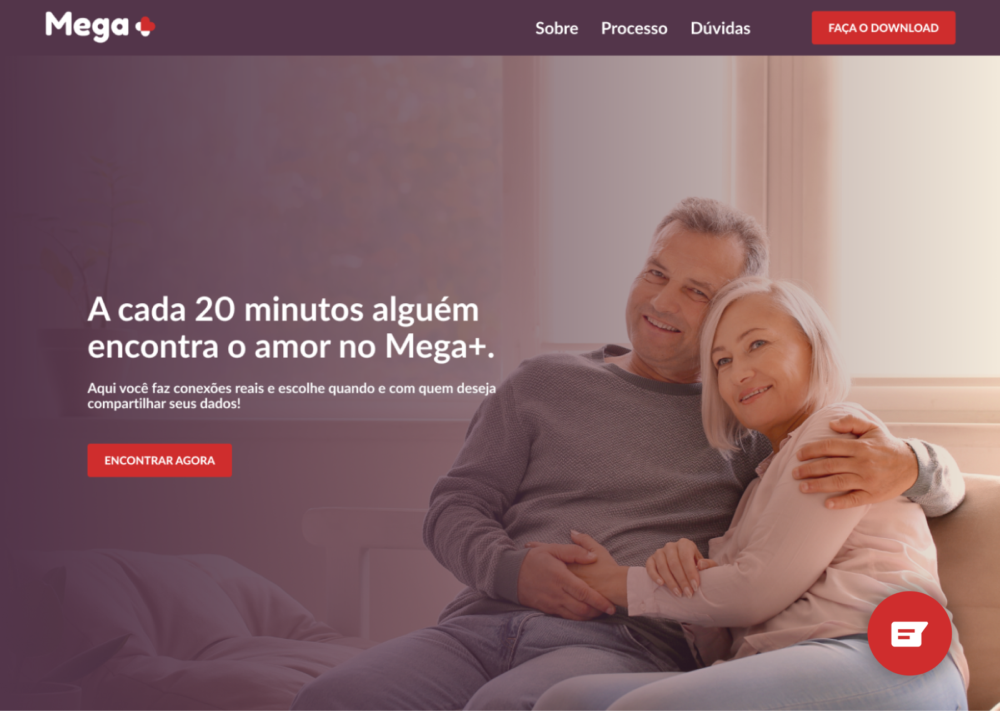
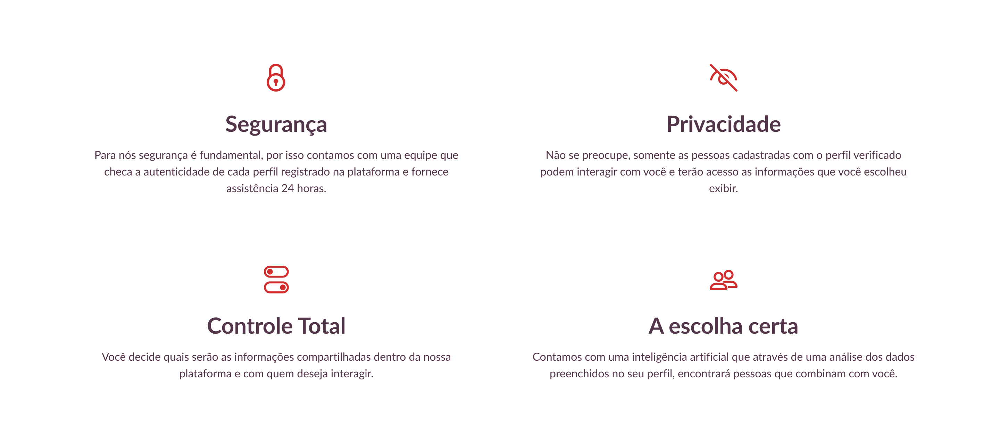
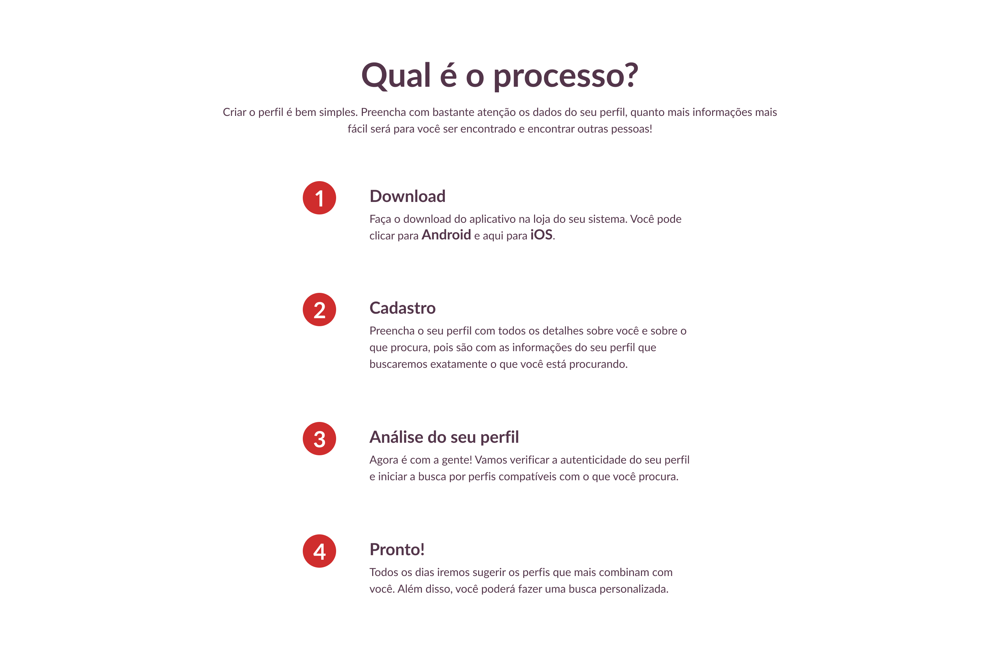
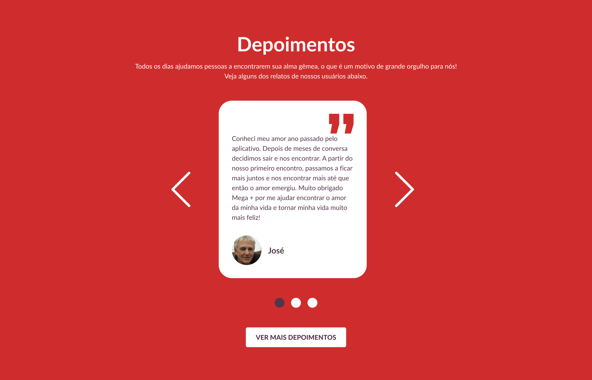
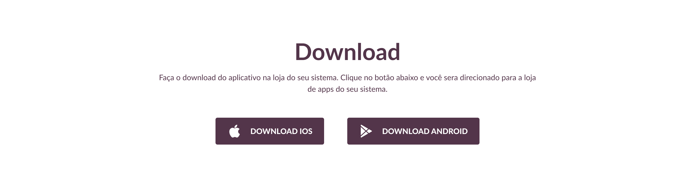

Produto
Embora os 60+ sejam o público principal esperado pelo produto, o Mega+ não quer restringir a possibilidade do uso por pessoas de outras faixas etárias, como os adultos acima de 40 anos.
Persona
Pesquisa inicial
Foram analisados os principais sites de relacionamento do mercado, o Tinder, Par Perfeito, Plenty of Fish e be2. Com isso, pude entender melhor como o problema era abordado pelos concorrentes, o que era bem estabelecido e quais eram os padrões seguidos. Pontos que valem a pena serem destacados:
- Sites simples
- Poucos elementos visuais
- Textos curtos
- Facilidade de navegação
- Facilidade para visualizar informações
- Campo de registro ou busca no Hero
Objetivos
As diretrizes básicas que nortearam o design da landing page:
Design Minimalista
O design foi pensado para ser simples, com pouca informação visual e direto ao ponto. Foi pensado assim para evitar que o usuário fique confuso com muitas informações aparecendo na sua tela, fazendo com que ele acabe perdendo o interesse no produto.
Acessibilidade
O design foi pensado para ser simples, com pouca informação visual e direto ao ponto. Foi pensado assim para evitar que o usuário fique confuso com muitas informações aparecendo na sua tela, fazendo com que ele acabe perdendo o interesse no produto.
Mobile First
O design foi pensado para ser simples, com pouca informação visual e direto ao ponto. Foi pensado assim para evitar que o usuário fique confuso com muitas informações aparecendo na sua tela, fazendo com que ele acabe perdendo o interesse no produto.
Jornada do Usuário
O design foi pensado para ser simples, com pouca informação visual e direto ao ponto. Foi pensado assim para evitar que o usuário fique confuso com muitas informações aparecendo na sua tela, fazendo com que ele acabe perdendo o interesse no produto.
Paleta de Cores
Para a escolha das cores, foram selecionadas as que remetiam a um conjunto de palavras como paixão, sobriedade, seriedade, amor, carinho, afeto, sofisticação e maturidade.
O contraste foi pensado para atender o mínimo em acessibilidade, garantindo uma melhor legibilidade para o usuário.
Ícones
Os ícones escolhidos para a interface foram todos no estilo contorno, seguindo a ideia principal de um design minimalista e limpo. Por serem utilizados como reforço visual do que está escrito, a usabilidade do site não será afetada.
Para os botões das lojas, footer e suporte, o estilo utilizado foi o preenchido. Para este caso se torna necessário, por terem uma função distinta, precisam se diferenciar do restante.
Tipografia
A fonte Lato foi escolhida por ser bem versátil, oferecendo diversos pesos e possibilitando mais opções no momento de desenvolver o design. Além disso é uma fonte com boa legibilidade e atende bem aos requisitos de acessibilidade.
Jornada
Header e Hero
O header segue um design bem consolidado. O botão de download pode ser sub-pagstituído por “login ou “crie uma conta” caso exista uma aplicação web.
No hero, os textos foram pensados para funcionarem como um “nudge”, um incentivo ao usuário, e também para passar maior segurança e sensação de exclusividade.
O botão “Encontrar Agora” pode ser explorado de duas formas, idealmente avaliadas em um Teste AB para identificar a que possui melhor performance.
- Ao clicar, um pop-up é aberto, com um fluxo para a pessoa preencher como ela se identifica, se ela busca homem, mulher ou todos, sua data de nascimento, e a seleção de interesses principais. Ao final aparece um resultado exibindo quantos perfis foram encontrados e chamando para o download do app.
- Uma outra opção é que ao clicar no botão “Encontrar Agora” a pessoa já é direcionada dentro da mesma página para a seção de download do app.
Um botão fixo para suporte foi adicionado para que o usuário possa ter acesso ao WhatsApp Web da empresa ou acesso a outros serviços relacionados ao suporte.
1ª Seção - Principais vantagens
A estrutura de apresentação da informação (ícone, título e descrição) foi pensada para ser simples, limpa e com menos distrações. A organização em colunas e linhas permite trabalhar com um design responsivo, desta maneira, o aumento do tamanho da fonte para se adequar a configuração do navegador não impactará tanto no design.
2ª Seção - Processo
Nesta seção e nas seguintes, foi introduzido um título e uma breve descrição contextualizando o usuário do que é tratado na seção. Foi criado um passo a passo explicando o processo de cadastro até o primeiro uso. Para isso criei um componente que tem como estrutura a numeração de qual etapa ele corresponde, o título da etapa e a descrição do processo.
Foram organizados de maneira vertical, pois facilita o acompanhamento do usuário pelo processo e também o uso em outros tamanhos de tela.
3ª Seção - Depoimentos
Foi criado um card com depoimento, nome e foto. Tanto na versão desktop quanto mobile um card somente é apresentado, visando manter o foco no depoimento. No desktop ícones para avançar e voltar são utilizados, enquanto no mobile outro recurso foi usado. Para dar um feedback ao usuário, steppers foram colocados embaixo do carrossel.
Um botão para ver mais depoimentos foi adicionado, direcionando para uma página com todos os depoimentos de quem já utilizou o aplicativo.
4ª Seção - Downloads
É uma seção simples, que tem como única função direcionar o usuário para o download do aplicativo e caso tenha uma aplicação web, ao cadastro. Os botões são diferentes do restante por conta de sua função, eles levam até a loja do sistema.
